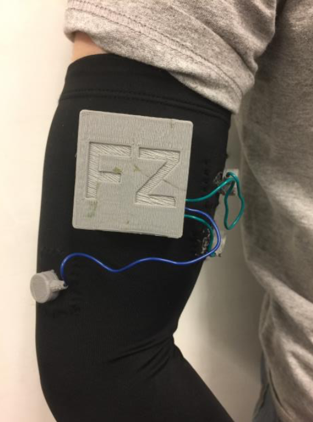
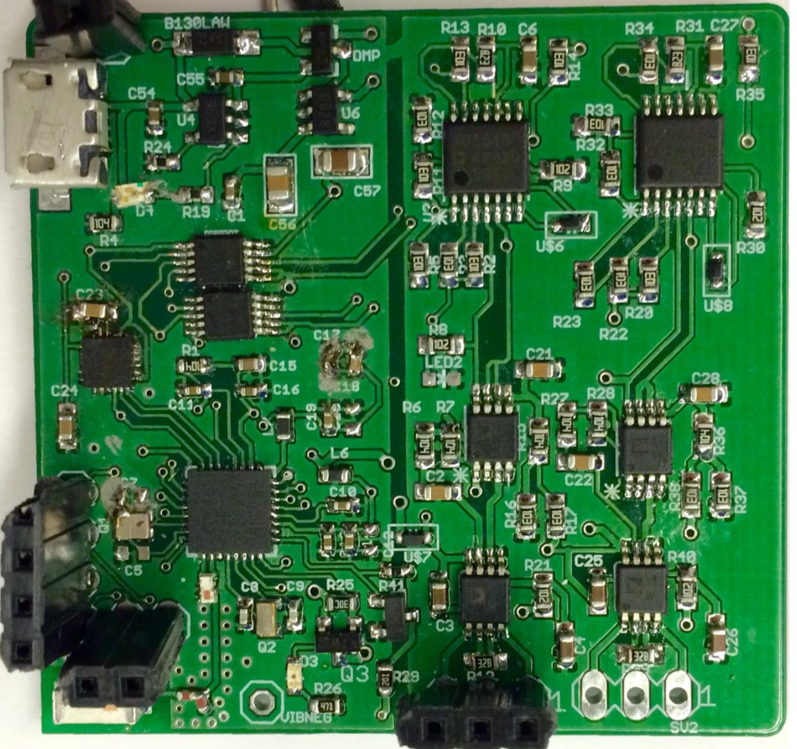
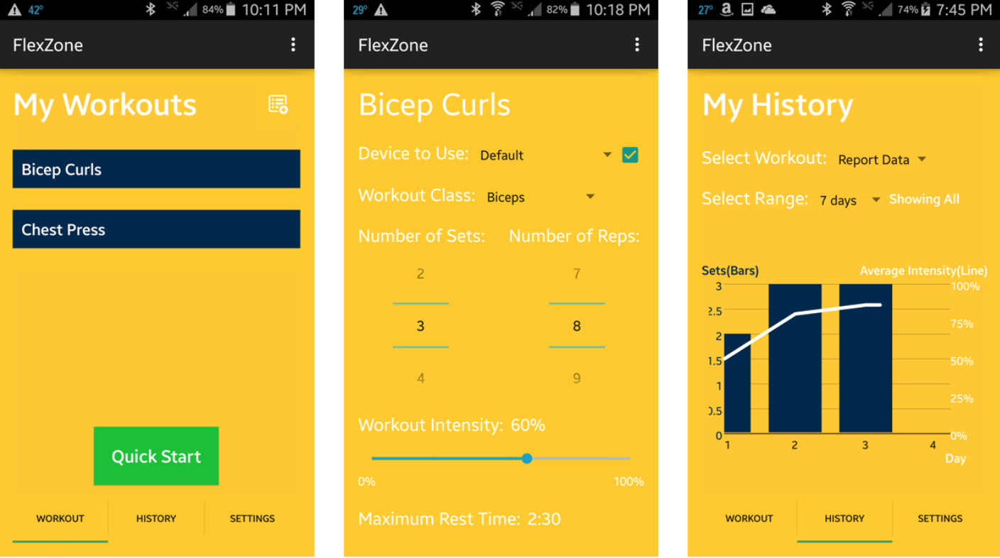
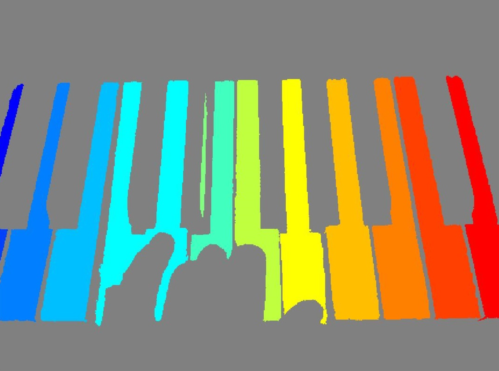
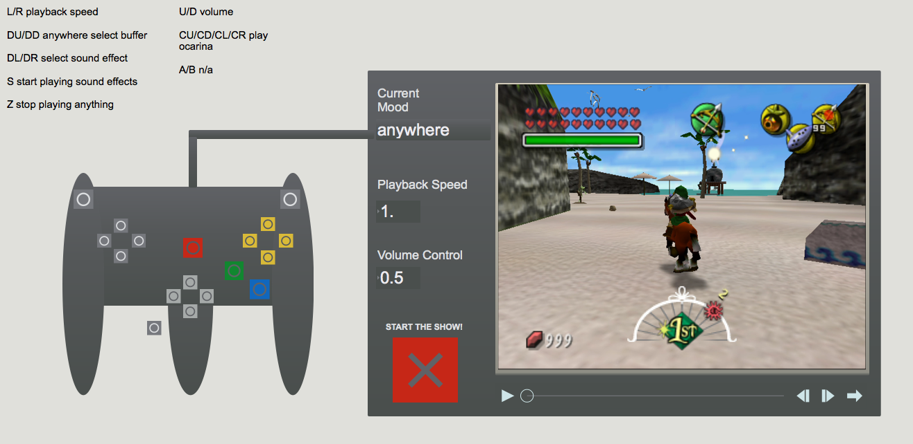

Ajaay Chandrasekaran
Greetings! Welcome to my personal page.
I am an aspiring roboticist with a background in software development and mathematics. I pursued my bachelors in computer science and my masters in electrical and computer engineering at the University of Michigan in Ann Arbor, MI.
My first name Ajaay is a modification of the Indian name Ajay. I respond to many pronunciations of it and have no preference for any of them. The most common pronunciations are Ay-Jay, Uhh-Jay, and Uhh-Jie.
My last name Chandrasekaran is based on the Indian name Chandrasekhar. I pronounce it as Chan-dra-say-ker-in.
Projects
Collision Estimation for Safe Planning
[Paper][Code]


For my Motion Planning course, I devised and implemented a Gaussian Mixture Model-based algorithm in C++ to expand upon existing methods to estimate the probability that a robot following a pre-generated motion plan would collide with an obstacle.
The motivation for this work is that a robot can benefit from quantifying the approximate safety of a motion plan before executing it. While a motion planner should generate a collision-free path, collisions may be possible as the robot follows the path due to natural uncertainty in the data it receives from its sensors and random noise in how it makes movements.
Existing methods to compute the exact probability of collision for a motion plan rely on running thousands of Monte-Carlo simulations of the robot following the motion plan, which is computationally expensive. The goal of this work is to estimate the probability of collision in a lower amount of time. Given a probability of collision before executing a motion plan, a robot can either execute it or revise the plan until it can find a "safer" plan.
For this work, I utilized the OpenRAVE simulation framework and Armadillo C++ linear algebra library to simulate a linear feedback controller and an Extended Kalman Filter estimate for the position of the PR2 robot as it followed a motion plan. I performed experiments to examine my algorithm's performance and presented my research in a paper and a conference talk.
Unfortunately, my algorithm did not perform as well as I had hoped, but I learned much from the experience in regards to conducting independent research.
Deep Neural Network Vehicle Detection System
[Report][Code]


For my Self-Driving Cars course, I worked in a team to implement a classifier to count the number of cars in an arbitrary image generated from Grand Theft Auto (GTA) simulation. We utilized the TensorFlow Python Object Detector API on AWS EC2 GPU instances to train a fast-RCNN with 50 layers. We trained the RCNN on ~ 6,000 training images with known bounding box locations of cars and we specified two classifications for a detected object: {Car, Not Car}.
Using our model, my team ranked 5th place among 35 teams in the class competition by achieving a 63% mean absolute error on the instructor's test set of GTA images with unknown car counts.
Trashbot
[Code]For my Autonomous Robotics Laboratory senior design course, I collaborated with a team to build a robot that autonomously navigates and detects and removes trash in its environment. The motivation for this project stemmed from noticing the plethora of trash across the UofM campus during football Saturdays. In theory, we could deploy a fleet of these trash collecting robots after a football game to pick up and dispose of various pieces of trash.
We built the robot over a span of 2 months from the ground up, and it was comprised of various hardware subsystems, including:
- A MagicBot base
- An Arduino and Motor controllers
- A robotic arm
- A Microsoft Kinect
- A PS2 Controller
Given the [x,y,z] position of an object centroid in the frame of the Kinect coordinate system, I used Python to apply homogeneous matrix transformations to convert the coordinates to the frame of the robotic arm's coordinate system. Following that, I implemented a trignometry-based inverse kinematics algorithm to determine the joint angles that the arm would need in order to position itself over that object's centroid point. Finally, I implemented a state machine to facilate the movement of the arm to pick up and dispose of an object into the MagicBot's onboard trash receptable without collisions.
This experience gave me the opportunity to work with various physical components and it made me very comfortable with getting my hands dirty. We enjoyed many trips to the local hardware store to piece this robot together. It was very rewarding to see the final product!


MDOT Lane Marking Evaluation
[Code]

As a research assistant at the University of Michigan Transportation Research Institute in Ann Arbor, MI, I worked under Dr. Daniel Park on a project to evaluate the effectiveness of various road lanemarking materials. The project was funded by the Michigan Department of Transportation (MDOT), and our goal was to determine how different lanemarking materials fared over time in the capricious Michigan weather.
A section of the US-23 N highway between Ann Arbor, MI and Brighton, MI was paved with different lanemarking materials along different stretches, and we sought to perform a study over a 2-year span to determine how well each lanemarking material lasted over time.
To achieve our goal we needed a way to take measurements of the lanemarkings' conditions on the US-23 highway once during each month so that after the 2-year period we could retrospectively analyze how the lanemarkings' conditions changed over time. Our solution to this problem was to equip a Honda Accord car with various sensors, including:
- Novatel GPS
- Quanergy M-8 Lidar
- Mobileye unit
- Camera

For this project, I developed multi-threaded C++ code utilizing VTK and PCL libraries to extract, interpret, and visualize data collected from our Lidar. We experimented with two Lidar's: The Quanergy M-8 and the Velodyne HDL-64E. Each of these Lidars outputs [x,y,z] point clouds of their surroundings as well as point intensities. We were mostly interested in examining the point intensity measurements of the landmarkings. In theory, we could see how the intensity of the points representing lanemarkings changed over time. The degradation of the lanemarkings from the Michigan weather would result in lower intensity points returned by the Lidar for various lanemarking materias.
I also developed C++ code to interface with our car's Mobileye unit via the vehicle's CAN message network. The Mobileye communicated data regarding the status of the left and right lanemarkings on the road in front of the driver. Its data arrived in real-time as a sequence of bytes that needed to be converted into a human readable format.
Finally, I facilated the collection of data from all four of our sensors simultaneously by helping to create a single module that would run all four sensor collection programs together as individual threads of a single CPU process. The module ran on a single HP i7 laptop during each of the car's monthly drives.
I was very proud of our final software system. This project necessitated a wonderful combination of both robotics and computer science knowledge.
BotLab Challenge
For my Autonomous Robotics Laboratory course, I worked in a team to compete in the course's Bot Escape Challenge competition. We were given the UofM April Lab's MAEbot platform, and we were tasked with building algorithms to help the MaeBot explore and escape from a wooden maze enclosure.
Using C++, we implemented various algorithms on the MAEbot, including:
- A* Path Planning
- Occupancy Grid Mapping
- MonteCarlo Localization
- PID Control
FlexZone Wearable Fitness Tracker
- Constructed circuit and PCB for EMG(electro-muscular)-based tracker; stream to Android app
- Devised DSP algorithms for EMG signal filtering on performance-bound hardware



Finger Beatz Wireless Music Creator
- Built wearable wireless glove controller for virtual sound distortion and physical drum interfaces
Physical Piano Transcription
- Architected script to output musical score of piano key presses in real-time using Matlab, Python
- Used Machine Learning principles, such as K-means to train algorithm on datasets

Electronic Music Composition
- Used Max/MSP, Arduino with N64 controller to control various parameters in looped samples
- Incorporated basic machine learning techniques to localize in-game location for sample usage

Skills
|
Programming Languages
General
|
Software Tools & Frameworks
Hardware Tools
|
Experience
Autonomous Vehicle Engineer
Developing algorithms for next-generation autonomous vehicles
Business Developement Lead
Developed business and market strategy for media startup
Built website to showcase media group's work
Embedded Systems / Computer Vision Intern
• Designed linear depth accuracy test infrastructure for production line qualification, used OpenCV • Architected low-level firmware, protocol messaging (iOS App front-end) • Sourced and tested multiple robotic manipulators (robot arms) for use in camera calibration
Instructional Aide, Introduction to Logic Design
• Tought and coordinated two weekly lab-based sections using Altera DE2-115 • Helped students with Quartus application software, IoT/embedded projects, FPGA programming
Software Engineer Intern
• Developed multithreaded monitoring tool for data migrations; web service backend, UI frontend • Increased productivity by 3 minutes per migration instance check, avg 100 instances per migration
Test Engineer Intern
• Programmed macros to analyze, manipulate, and graph test data; used VBA and Microsoft Excel • Facilitated testing of automotive switches and parts in accordance with customer specifications • Improved design of switch internals, electronics and electromechanics, led to lower failure rates by 20%
Education
University of Michigan
GPA: 4.00
University of Michigan
Advanced Technical Coursework
Winter 2018
- EECS 568: Mobile Robotics: Methods and Algorithms (SLAM)
- EECS 588: Graduate Embedded Security
- BME 517: Neural Engineering
- ROB 599: Robot Ethics
Fall 2017
- EECS 567: Robot Kinematics and Dynamics
- ROB 599: Self-Driving Cars: Perception and Control
- PAT 501: Electronic Music Production
Winter 2017
- EECS 482: Operating Systems
- EECS 461: Embedded Control Systems
- EECS 445: Machine Learning
Fall 2016
- EECS 473: Advanced Embedded Systems
- EECS 442: Computer Vision